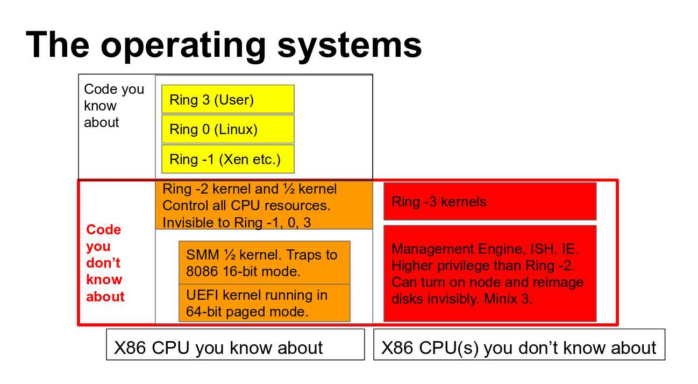

class: center, middle # Firmware: Unbeachtet aber essentiell Paul Menzel Max-Planck-Institut für molekulare Genetik <img alt="MOLGEN-Logo" src="MPIMG_helix_rgb.png" style="width: 30%" \> --- class: middle ## Git-Depot ``` git clone https://github.com/paulmenzel/firmware_unbeachtet_aber_essentiell ``` ## Zugriff auf HTML-Datei https://www.molgen.mpg.de/~pmenzel/firmware_unbeachtet_aber_essentiell.html --- # Übersicht/Agenda 1. Was ist Firmware? 1. coreboot 1. Demo mit QEMU 1. Angriffsmodelle 1. Google Chromebooks und -boxes 1. Acer Chromebook R 13 1. Mitmachen 1. Weitere Informationen 1. Fazit --- name: section layout: true class: center, middle --- # Was ist Firmware? --- layout: false ## Wo? BLOB: Binary Large Object ### Firmware in allen Komponenten 1. Hauptplatine 1. Hilfsprozessoren (Intel ME, AMD PSP, …) 1. Embedded Controller in Laptops 1. BCM (Baseboard Management Controller, stellt IPMI bereit) 1. Erweiterungskarten (Grafik-, Netzwerkkarte, RAID-Controller, …) 1. Festplatte (HDD, SSD) 1. PCM, [SCPSYS](https://git.kernel.org/pub/scm/linux/kernel/git/torvalds/linux.git/tree/Documentation/devicetree/bindings/soc/mediatek/scpsys.txt) 1. Monitor ([Dell UP3214Q](https://jmswrnr.com/blog/the-firmware-issues-of-dell-up3214q-and-up2414q-a00-monitors/)) 1. Batterie 1. … --- # Ko- oder Hilfsprozessoren ## Intel 1. [Intel Management Engine (ME)](https://en.wikipedia.org/wiki/Intel_Active_Management_Technology#Hardware) 1. Zwingend Teil des Chipsatzes 1. vor ME 11: ARC-Kern mit ThreadX RTOS von Express Logic 1. ab ME 11: Intel Quark x86-basierende 32-bit CPU mit MINIX 3 als OS 1. Intel AMT 1. Netzwerk- und IP-Stack 1. ab ME 7.1: ARC-Prozessor kann signierte Java-Applets ausführen ## AMD 1. AMD Platform Security Processor (PSP) --- ## Ringmodell  Quelle: [Linuxcon 2017 NERF](https://docs.google.com/presentation/d/1rz6ATJ6PNf_iJeDlqJvLqYZmyuJIN5SMli8halvyovY/edit#slide=id.g1e6276a76c_0_22) --- Einheitliche Schnittstelle für Betriebssystem ### x86 1. Ablauf: BIOS/UEFI im Flash-ROM-Chip → Bootloader im MBR → OS-Kernel 1. Grafische Oberfläche 1. UEFI-Implementierung [TianoCore](http://www.tianocore.org/) unter MIT-Lizenz 1. Meisten IBVs eigene Implementierung 1. Firmware der Hersteller normalerweise proprietär 1. Wem gehört die Hardware? Datenblätter? Schaltpläne (schema)? 1. Probleme: Zwang: Start von FAT-Dateisystem, Schlüsselverwaltung, Betriebssystem, … ### Nicht x86 1. ARM: U-Boot, Barebox, … 1. OpenPOWER: [Hostboot, SkiBoot, Petitboot, …](https://www.thomas-krenn.com/de/wiki/Bootprozess_eines_OpenPOWER_Servers) 1. MIPS: GRUB, … 1. RISC-V: coreboot, … --- ## Wie schreiben? 1. [Flashrom](https://www.flashrom.org) zum Schreiben aus Betriebssystem 1. [Flash-ROM-Typen](https://www.flashrom.org/Technology) 1. [Unterstützte Hardware](https://www.flashrom.org/Supported_hardware) 1. [Externe „Programmer“](https://www.flashrom.org/Supported_programmers) 1. [UEFI Capsule](https://www.intel.com/content/www/us/en/architecture-and-technology/unified-extensible-firmware-interface/efi-capsule-specification.html) 1. Nur von Dell auf einigen Systemen unterstützt 1. [fwupd](https://fwupd.org/) --- template: section <img alt="coreboot-Logo" src="Coreboot_full.svg" width="75%" \> --- ## Geschichte 1. Gegründet von Ron Minnich als LinuxBIOS am [LANL](https://www.lanl.gov/) 1. Konfiguration mit Tastatur und Aktualisierung der Firmware von über 1.000 Clusterknoten mit DOS-Programmen inakzeptabel 1. [„Press F1 to continue.“](http://www.h-online.com/open/features/The-Open-Source-BIOS-is-Ten-An-interview-with-the-coreboot-developers-746525.html) 1. [The Linux BIOS](https://www.coreboot.org/images/1/14/Linuxbios.ps) 1. [Who is working on coreboot?](https://www.coreboot.org/FAQ#Who_is_working_on_coreboot.3F) 1. [https://www.coreboot.org/Clusters](SC 2000: The first LinuxBIOS cluster, built at SC 2000, now at LANL) 1. [1024-node linuxbios cluster with Dual-P4 systems and Myrinet](https://mail.coreboot.org/pipermail/coreboot/2002-September/000297.html) --- ## Speziell Ziel: Schnellstmögliche Übergabe von Kontrolle an Betriebssystem 1. Minimale Initialisierung der Hardware (keine Benutzerinteraktion) 1. bootblock 1. romstage 1. ramstage 1. [Payload](https://www.coreboot.org/Payloads) 1. coreboot *kein* BIOS ### Beispiel 1. coreboot → SeaBIOS → MBR → OS 1. coreboot → GRUB → OS 1. coreboot → Linux --- ## Erste Instruktion Ausgabe von `tail -13 ./src/cpu/x86/16bit/reset16.inc`: ```C .section ".reset", "ax", %progbits .code16 .globl _start _start: .byte 0xe9 .int _start16bit - ( . + 2 ) /* Note: The above jump is hand coded to work around bugs in binutils. * 5 byte are used for a 3 byte instruction. This works because x86 * is little endian and allows us to use supported 32bit relocations * instead of the weird 16 bit relocations that binutils does not * handle consistently between versions because they are used so rarely. */ .previous ``` --- ## Freie Lizenz mit allen Vorteiler 1. GPLv2 1. Vorteile von freier Software 1. Herstellerunabhängig 1. Wartbar 1. Überprüfbar ## Beispiele 1. Starten über USB in Vergangenheit 1. [Aktualisierungen mit Fehlerbehebung für Fehler in Intel-Management-Engine (INTEL-SA-00075 (CVE-2017-5689)) auf Hersteller warten](https://www.heise.de/security/meldung/Intel-ME-Sicherheitsluecke-Erste-Produktliste-noch-keine-Updates-3703356.html) 1. Dell XPS 13 9360: [Dell findet schlecht programmierte ASL/ACPI-Methode für nicht wichtig genug, um diese zu beheben.](https://bugzilla.kernel.org/show_bug.cgi?id=185611#c30) 1. Dell XPS 13 9360: [Dell veröffentlicht die Änderung in Firmware 2.2.1 nicht.](http://www.dell.com/support/home/de/de/debsdt1/drivers/driversdetails?driverId=7RXGJ) 1. [*AMD x86 SMU firmware analysis*, Rudolf Marek](https://media.ccc.de/v/31c3_-_6103_-_en_-_saal_2_-_201412272145_-_amd_x86_smu_firmware_analysis_-_rudolf_marek) → kaum Aktualisierungen von Herstellern --- ## Demo mit QEMU ### [Lektion 1](https://www.coreboot.org/Lesson1) ```bash $ git clone --recurse-submodules https://review.coreboot.org/coreboot.git $ make crossgcc-i386 CPUS=$(nproc) $ make menuconfig $ make $ build/cbfstool build/coreboot.rom print $ qemu-system-x86_64 -bios build/coreboot.rom -serial stdio ``` ### Meldungen und Zeitstempel * CBMEM console, CBMEM time stamps * Programm `cbmem`: `cbmem -c`, `cbmem -t` * Linux-Kernel-Modul `memconsole_coreboot` exportiert Konsole über `/sys/log/firmware` --- # Angriffsmodelle 1. Siehe Ringmodell 1. Zugriff auf alle Resourcen (RAM, Netzwerkkarte) 1. Vertrauen in Hardwarehersteller 1. Keine Möglichkeit der Überprüfung 1. System Management Mode (SMM) 1. Abwehrmethoden in Betriebssystem machtlos 1. Unbekannte Hintertüren --- # Angriffsmodelle ## Beispiele 1. Manipulation der Firmware 1. Unbekannte Schwachstelle oder 0-Day-Lücke ohne Aktualisierung von Hersteller 1. Hersteller wartet funktionierende Hardware nicht mehr Weitere Überlegungen: https://trmm.net/Heads_threat_model --- # Google Chromebooks und -boxes 1. Bis auf die ersten zwei Modelle alle Geräte mit coreboot 1. Architekturen: x86 (Intel), ARM (Rockchip, Mediatek, Nvidia, …), MIPS 1. Eigenes Sicherheitskonzept vboot2 und TPM 1. Freie Firmware *[Chrome EC](https://www.chromium.org/chromium-os/ec-development)* läuft auf aktuellen Geräten 1. coreboot → Depthcharge (Payload) → Linux (Chrome OS) 1. Zeit bis Anmeldebildschirm nicht länger als 10 Sekunden 1. QA: Testabteilungen (Programme Start, Einschlafen, Aufwachen) 1. Aktualisierungen Over-the-air ## Achtung bei x86 1. Bei Geräten mit Intel x86 werden auch BLOBs von Intel, Firmware Support Package (FSP), verwendet. --- # Dilemma ## x86 (Intel und AMD) 1. Bei x86 und Intel BLOBs in Firmware, aber … 1. Grafiktreiber in Linux 1. Ökosystem 1. https://mrchromebox.tech/ 1. https://johnlewis.ie/ ## ARM (fast überall) 1. Kaum BLOBs in Firmware, aber … 1. Erweiterte Funktionen des Grafiktreibers nur mit BLOB, möglicherweise inkompatibel --- # Google Chromebooks und -boxes ## Entwicklermodus 1. [Erlaubt Start von eigenem OS von eMMC](https://wiki.galliumos.org/Firmware) 1. Tastenkombination 1. Strg + d 1. Löschen von allen Daten 1. Vollzugriff (TTY, Strg + Alt + t → `shell` → `sudo cbmem -c`) Aber immer noch kein Schreibzugriff auf Flash-ROM-Chip … --- # Google Chromebooks und -boxes ## Write-Protect 1. Schraube 1. Danach Schreibzugriff mit Flashrom --- Präferenz: [Samsung Chromebook Plus mit Rockchip RK3399, aber nur in USA](https://mail.coreboot.org/pipermail/coreboot/2017-May/084389.html) # Acer Chromebook R 13 ## Spezifikationen 1. Prozessor: [Mediatek MT8173](https://www.notebookcheck.com/Mediatek-MT8173-SoC.137949.0.html) 1. Grafikkarte: PowerVR GX6250 1. Hauptspeicher: 4096 MB, LPDDR3 1. Convertible, Touchscreen 1. Kodename: Google Elm, Variante von Google Oak (`src/mainboard/google/oak`) ### Nachteile 1. BLOB für PowerVR GPU 1. [Debian on Acer Chromebook R 13 CB5-312T](https://tails.boum.org/blueprint/ARM_platforms/Acer_Chromebook_R_13_CB5-312T/) --- # Acer Chromebook R 13 Öffnen und Entfernen der Schraube <img alt="Geöffnetes Acer Chromebook R 13" src="acer_chromebook_r_13_offen.jpg" width="100%" \> --- ## Stand 1. Gebaut mit [Libettereboot](https://git.code.paulk.fr/gitweb/?p=libettereboot.git;a=summary) von Paul Kocialkowski 1. Abbild mit gelieferten Flashrom geschrieben: `flashrom -w my_coreboot.rom` 1. Chrome OS startet noch und Betriebssystem von eMMC auch --- # Mitmachen 1. WWW: https://www.coreboot.org 2. Wiki (MediaWiki): https://www.coreboot.org/Welcome_to_coreboot 3. [Listen/Verteiler (Mailman)](https://www.coreboot.org/Mailinglist): coreboot@coreboot.org 4. [IRC](https://www.coreboot.org/IRC): #coreboot@irc.freenode.net 5. [Quelltext (Git)](https://www.coreboot.org/Git): ```bash git clone --recurse-submodules https://review.coreboot.org/coreboot.git ``` 6. [Begutachtung (Gerrit)](https://www.coreboot.org/Git#Gerrit): https://review.coreboot.org 7. Fehlerdatenbank (Redmine): https://ticket.coreboot.org --- # Weitere Informationen 1. [*Bootstraping a slightly more secure laptop*, Trammell Hudson](https://media.ccc.de/v/33c3-8314-bootstraping_a_slightly_more_secure_laptop) 1. [*Hardening hardware and choosing a #goodBIOS*, Peter Stuge](https://media.ccc.de/v/30C3_-_5529_-_en_-_saal_2_-_201312271830_-_hardening_hardware_and_choosing_a_goodbios_-_peter_stuge) 1. [*Why coreboot is harder than you think and easier than you might think possible*, Ron Minnich](https://brmlab.cz/event/coreboot_fun) 1. Georg Wicherski zu Reiselaptop 1. [t2 / 2015 - Building a Reasonably Safe Travel Burner Laptop (Georg Wicherski)](https://www.youtube.com/watch?v=p2crT4y4EM4) 1. [*SyScan360'16 Singapore: Building A Reasonably Safe Travel Burner Laptop*](https://www.youtube.com/watch?v=rDanT0tJZpI) 1. [Folien zu *SyScan360'16 Singapore: Building A Reasonably Safe Travel Burner Laptop*](https://www.syscan360.org/slides/2016_SG_Georg_Wicherski_Towards_a_Secure_and_Measured_Travel_Laptop.pdf) 1. https://motherboard.vice.com/en_us/article/53dpgn/hackers-activists-journos-how-to-build-a-secure-burner-laptop --- # Fazit 1. Firmware oft übersehen. Fokus auf OS. 1. Proprietäre Lösungen mit vielen Problemen 1. Meisten Funktionen von BIOS/UEFI nicht gebraucht 1. Wunsch: GNU/Linux als Payload: getestet, bekannt und flexibel 1. gebraucht 1. Druck von Käufern/Nutzern 1. Nachfrage nach Alternativen 1. Keine Unterstützung von verschlossenen Herstellern 1. Aufnahme in Pflichtenheft 1. Server: OpenPOWER 1. Server: Asus KGPE-D16 (AMD), nicht realistisch 1. [Non-Extensible Reduced Firmware (NERF)](https://trmm.net/NERF) 1. Laptops: Nutzen von Produkten 1. ARM 1. [Puri.sm](https://puri.sm/) 1. Google Chromebooks und -boxes 1. Arbeitsplatzrechner 1. [ORWL](https://www.crowdsupply.com/design-shift/orwl) 1. Workstation: TALOS II 1. ARM-Geräte leistungsfähig genug 1. Klärung von Rahmenverträgen --- template: section # Noch Fragen?